The Problem
Existing portable keyboards fall into two camps: lightweight but mushy, or weighted but bulky. For traveling musicians, producers, and students, there's no option that delivers authentic piano feel in something you'd actually take on a plane. The market gap is clear — a keyboard that weighs under 5 lbs but plays like an 88-key acoustic.
Personal Motivation
17+ years of piano training means muscle memory is non-negotiable. A keyboard that doesn't push back correctly rewires your touch. This project started from lived frustration — wanting to practice seriously while traveling without hauling 40 lbs of weighted action.
Target Users
Traveling musicians, producers, music students, and hobbyists who need authentic weighted feel in a portable form factor.
Design Goal
Match the force-displacement curve of an acoustic piano action using magnetic repulsion instead of mechanical counterweights and levers.
Material Selection — FEA-Driven
Key material choice determines whether the keyboard survives real use. Finite element analysis compared two candidates under a 1.5 N static load (typical piano keystroke force) and thermal stress conditions.
ABS Plastic
Standard FDM printing material. Under 1.5 N load, FEA showed excessive displacement — keys would flex noticeably during normal playing. Fatigue life unacceptable for repetitive keystroke loads. Fine for enclosures, wrong for load-bearing action components.
Glass-Fiber Reinforced PF Composite
Phenol formaldehyde reinforced with glass fiber. Significantly stiffer under identical loading — displacement within acceptable range. Superior fatigue resistance for repetitive keystrokes. Thermal stability handles temperature variations during transport and storage.
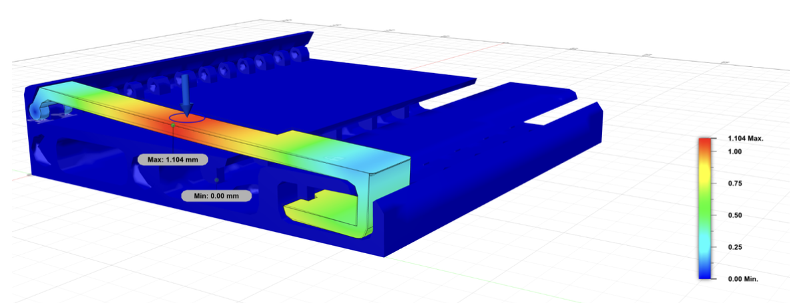
ABS plastic — max displacement 1.104 mm. Excessive deflection at key tip under 1.5 N load.
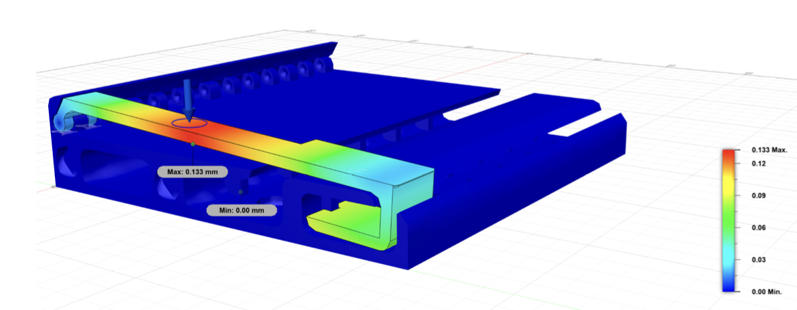
GFR PF composite — max displacement 0.133 mm. ~8× stiffer, well within acceptable range.
Material Properties
- ABS — Stiffness
- ~2.3 GPa tensile modulus — insufficient for thin-wall key geometry
- GFR PF — Stiffness
- ~8–12 GPa tensile modulus — 4× stiffer than ABS at comparable weight
- Load Case
- 1.5 N static (typical keystroke), evaluated at key tip and hinge point
- Thermal
- Stress analysis for storage/transport temperature range (0°C–50°C)
- Benchmark
- Ivory reference for surface tactile properties and finger contact feel
CAD Modeling
All modeling done in Fusion 360. Monolithic key design integrates the hinge geometry directly into each key body — no separate pivot hardware. Modular connection features allow individual keys to snap into octave frames, enabling scalable assembly from a single octave prototype to full 88-key layout.
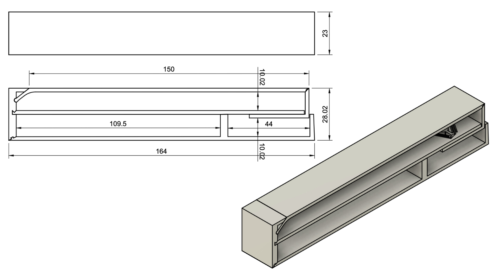
Individual key — 164 mm length, 28 mm height. Monolithic body with integrated hinge and magnet pockets.
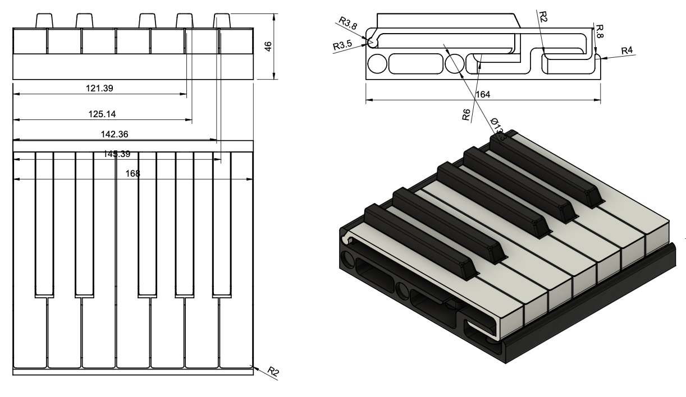
Octave assembly — 166 mm width. Modular snap-fit connection features for scalable multi-octave layout.
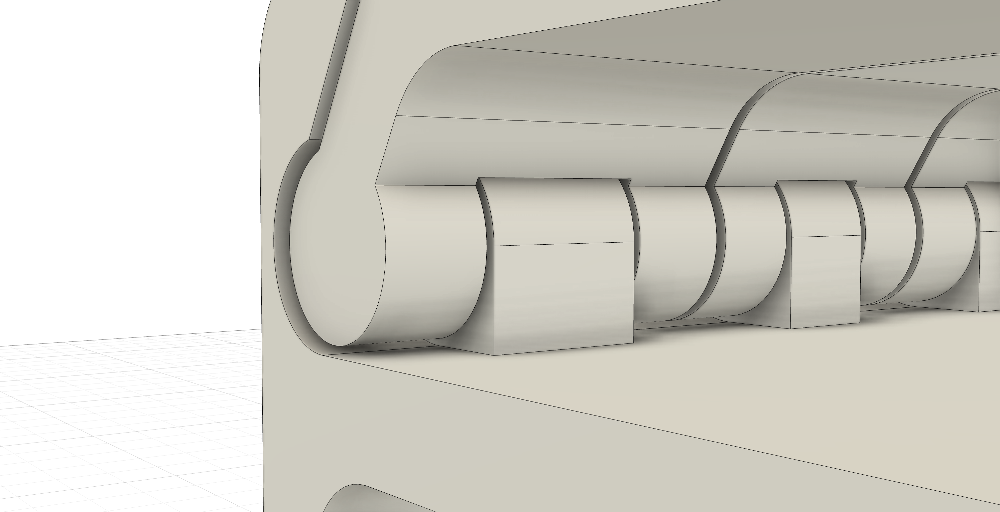
Hinge detail: living hinge geometry integrated directly into the key body — no separate pivot hardware.
Iterative Key Prototypes
Four generations of individual key prototypes, each addressing failures from the previous version. All 3D printed on FDM printers with progressive refinements to wall thickness, edge geometry, and weighting mechanism.
Thin-Wall Exploration
First physical test of the monolithic key geometry. Minimal wall thickness to test hinge flex. Result: structurally unusable — walls too thin for any meaningful force application. Valuable for validating print orientation and hinge geometry.
Outcome → Confirmed hinge concept works, but wall thickness needs 2–3× increase.
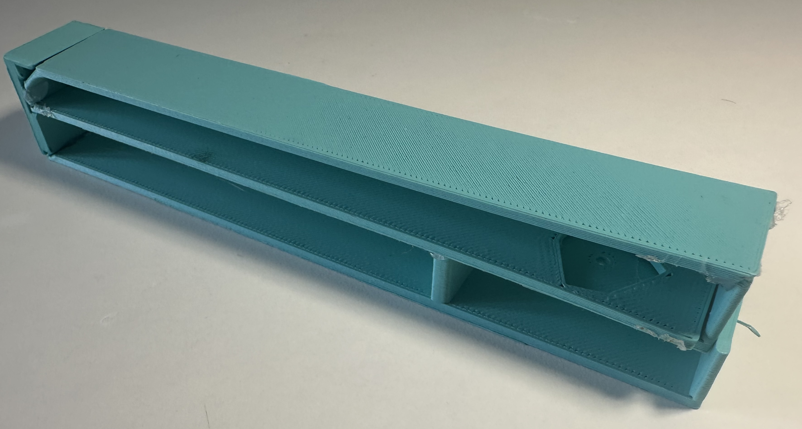
First Weighted Action
Thicker walls with a spring and magnet weighting mechanism. First prototype with actual key resistance. Played with recognizable piano-like feel, but the spring-magnet combination was too delicate — springs dislodged during repeated keystrokes.
Outcome → Proved weighted feel is achievable. Spring retention mechanism needs redesign.
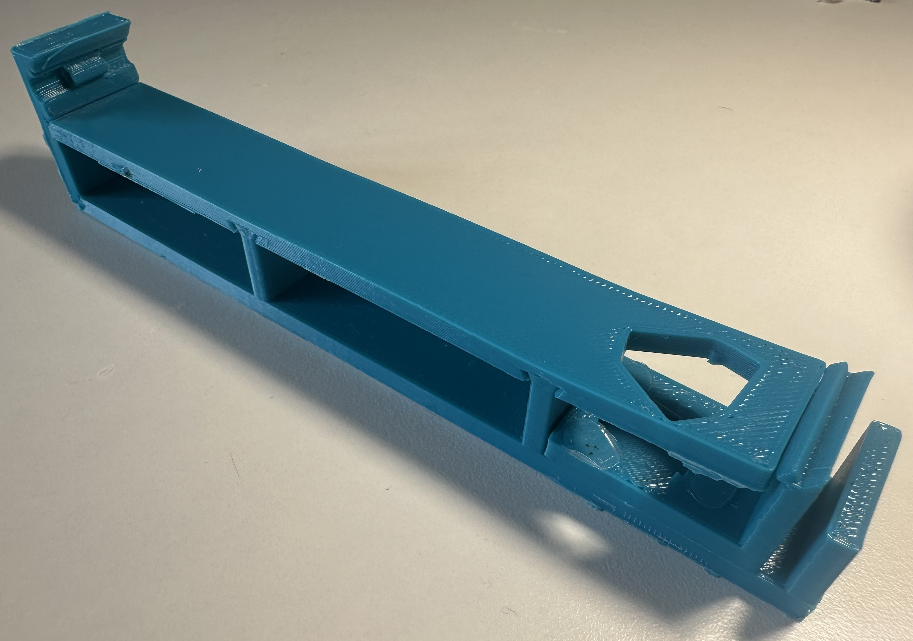
Rounded Edges & Reinforcement
Addressed V2's fragility with rounded edges (stress concentration reduction), thicker hinge cross-section, and improved layer adhesion through print parameter tuning. More durable under repeated play.
Outcome → Structurally sound for extended testing. Ready for magnet-only weighting system.
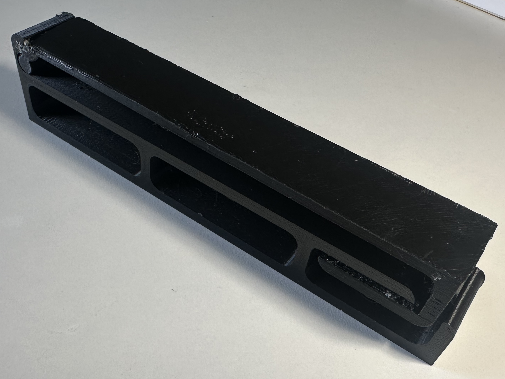
N52 Neodymium + Vertical Guide Track
Replaced spring mechanism with N52 neodymium magnets in repulsion configuration. Added vertical guide track to constrain key travel to a single axis. Magnet spacing calibrated to approximate the force-displacement curve of a Yamaha weighted action.
Outcome → Demonstrated that magnet-based weighting alone can replicate piano feel. Key milestone.
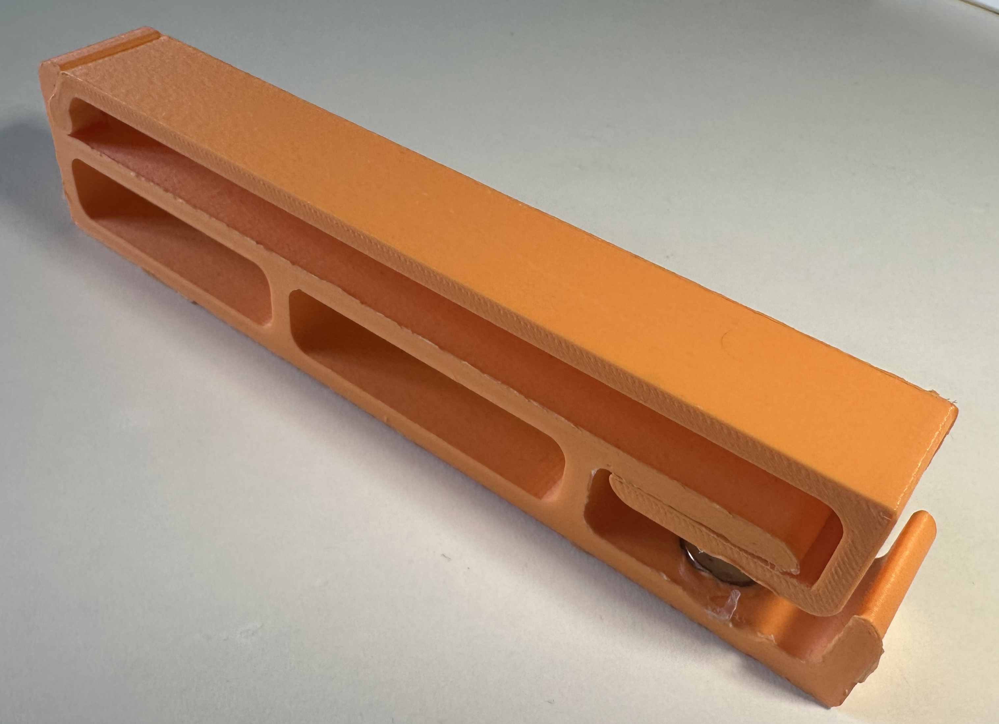
Octave Prototypes
Two octave-scale prototypes testing multi-key interaction, modularity, and sensor integration.
Octave V1 — Springs + External Magnets
First multi-key assembly. Spring-based weighting with external N52 magnets. Validated that adjacent keys don't interfere magnetically. Identified alignment tolerances needed for consistent feel across all 12 keys.
Octave V2 — Snap-Fit + Hall Effect
Side recesses for snap-fit modular connection between octave units. Integrated Hall effect sensor positioning for MIDI triggering. Felt pads added for dampening at key-bottom. First prototype with electronic sensing.
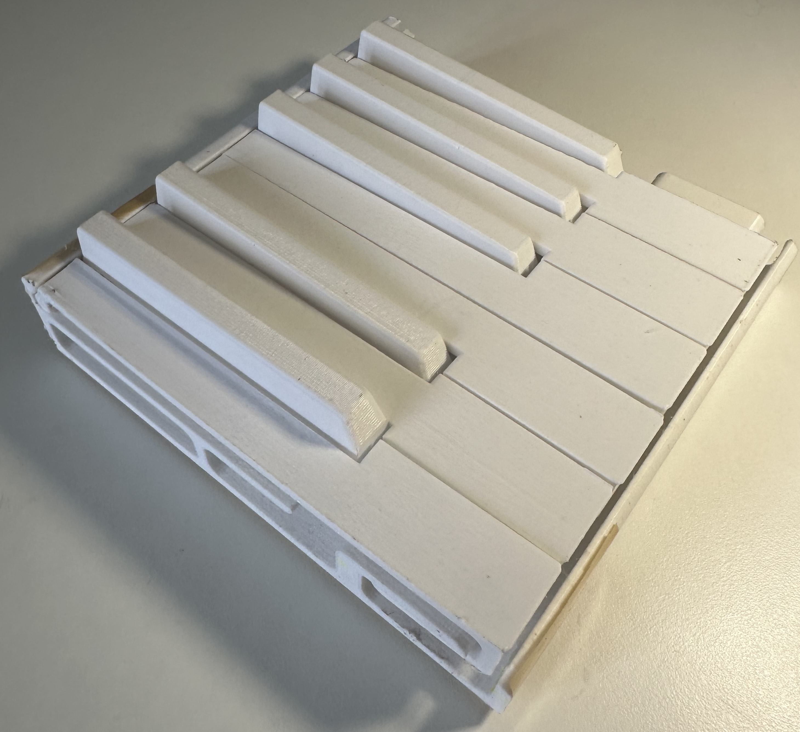
Octave V1 — spring-based weighting with external N52 magnets. First multi-key assembly.
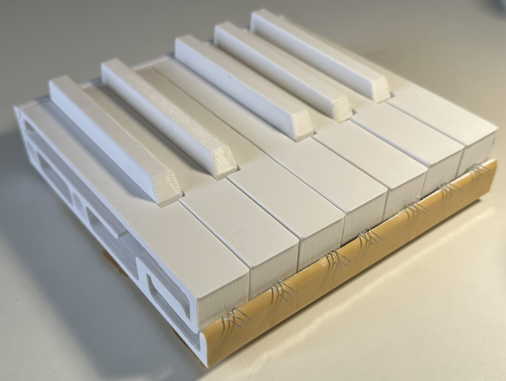
Octave V2 — snap-fit side recesses, Hall effect sensor positioning, felt dampening pads.
Complete 88-Key CAD
Full 88-key layout modeled in Fusion 360 from the modular octave design. The snap-fit connection system allows the keyboard to be manufactured as individual octave modules and assembled without fasteners — a key enabler for both manufacturing and portability.
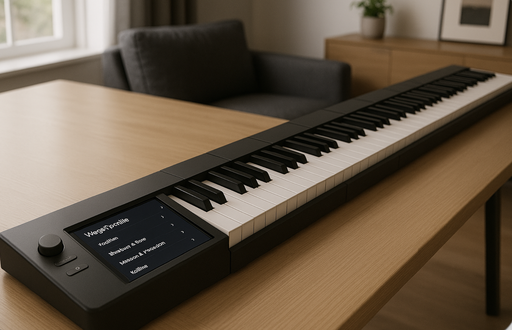
88-key concept visualization — modular octave units connected via snap-fit recesses, with weight profile selection display.
Hall Effect → MIDI Pipeline
Each key carries an N52 neodymium magnet. Hall effect sensors positioned on the base PCB detect the magnetic field strength continuously as the key travels — producing a voltage proportional to displacement. This analog signal maps to MIDI velocity, enabling expressive dynamics that capture how each key is pressed, not just that it was pressed.
Magnets
N52 neodymium
Repulsion weighting
+ key-mounted sensing
Sensors
Hall effect sensors
Continuous analog
displacement tracking
Signal
Voltage → position
Force-displacement
curve per keystroke
Output
MIDI Note On
Velocity mapping
Expressive dynamics
Assembly Details
The physical assembly integrates 3D printed key frames, ceramic magnets in recesses, Hall effect sensors positioned for optimal displacement detection, and N52 magnets secured on the base. Felt pads at key-bottom provide acoustic dampening and define the end-of-travel feel.
Key Assembly
3D printed key body with integrated hinge. Ceramic magnets press-fit into recesses on the key underside. Vertical guide track constrains travel to a single axis.
Base Frame
N52 neodymium magnets secured to base with tape (prototype) — production design uses press-fit pockets. Hall effect sensors soldered to PCB at calibrated positions beneath each key.
Calibration
Magnet spacing tuned per-key to match the force-displacement curve of a weighted acoustic action. Sensor gain adjusted so full key travel maps to full MIDI velocity range (0–127).
Dampening
Felt pads at key-bottom absorb impact and define a positive end-of-travel stop. Mimics the felt-on-wood contact of acoustic piano hammers.
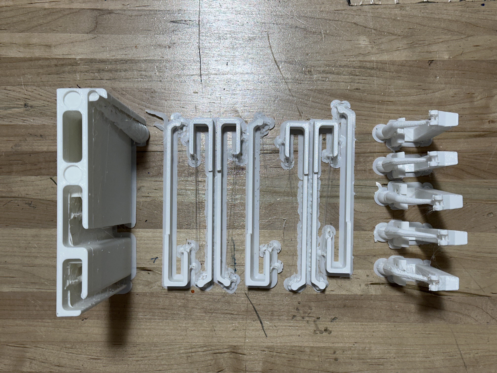
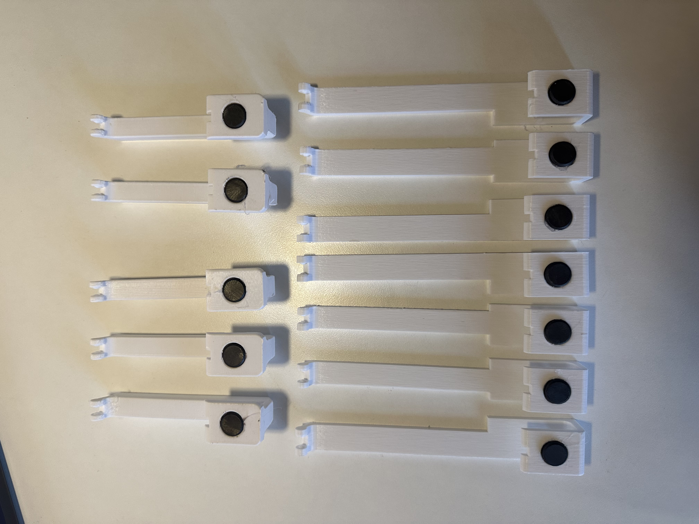
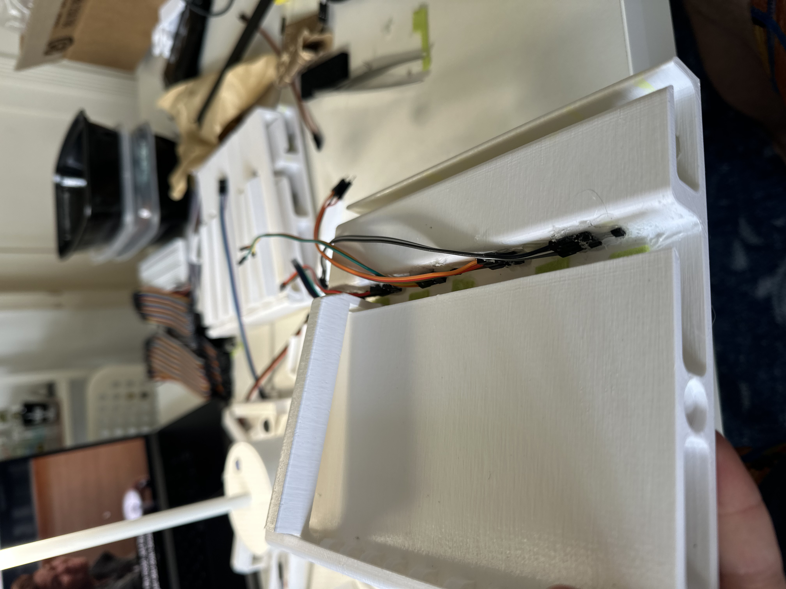
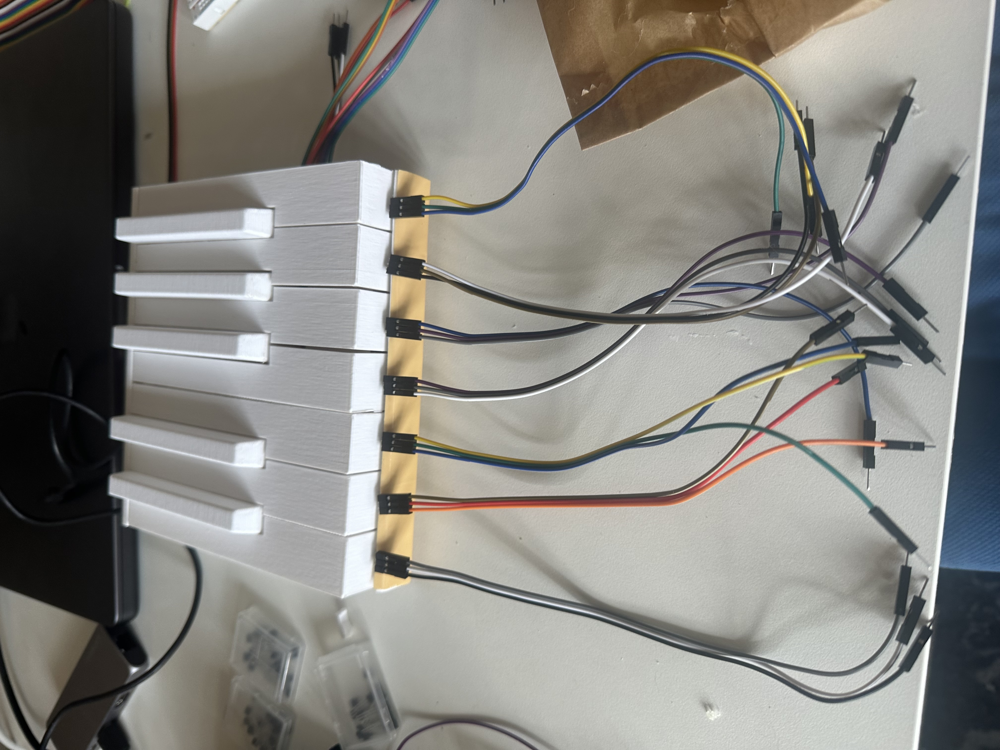
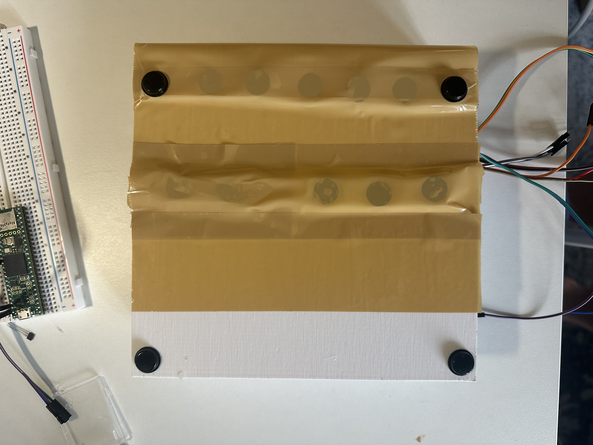
Assembly progression: disassembled components → keys with ceramic magnets → Hall effect sensor wiring → assembled octave with sensor harness → base plate with N52 magnets and Teensy breadboard.
Results & Next Steps
The V4 key and Octave V2 prototypes demonstrated that magnet-based weighting can successfully replicate the feel of weighted piano action in a fraction of the weight and volume. Hall effect sensing captures continuous key displacement for expressive MIDI output.
What Worked
N52 repulsion-based weighting mimics real piano feel. Hall effect continuous sensing captures dynamics lost by binary velocity keyboards. Modular snap-fit octaves scale to full 88-key layout. 3D printing enables rapid iteration — 4 key versions in weeks.
Next Steps
Resin printing for production-quality surface finish. Hybrid magnet/electromagnet system for adjustable weighting profiles. Teensy microcontroller integration for USB MIDI output. Comparative user testing with trained pianists against reference weighted keyboards.